Esta guía es para aprender como utilizar la aplicación Bookbnb, dedicada a la oferta de alojamientos a individuos.
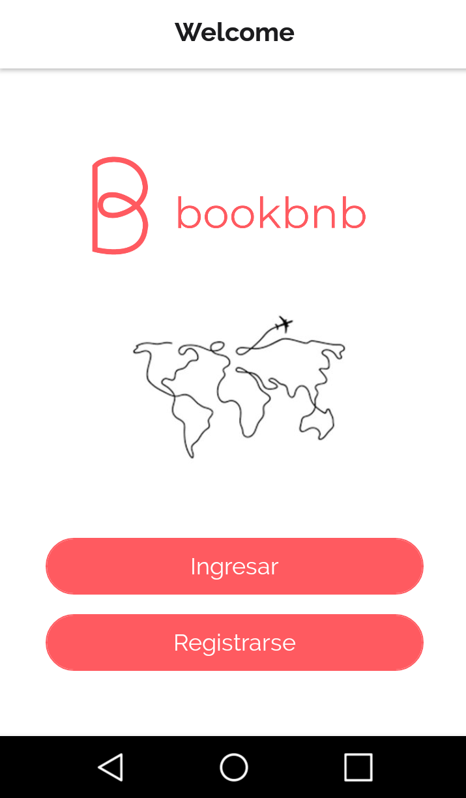
La primera pantalla se le presentará con dos opciones
A continuación detallamos los pasos a seguir para cada uno
Para poder utilizar la aplicación, el primer paso consta de crearse una cuenta.
Si es la primera vez que usa esta aplicación debe registrarse.
En el caso de que ya tenga una cuenta, puede salter este paso.
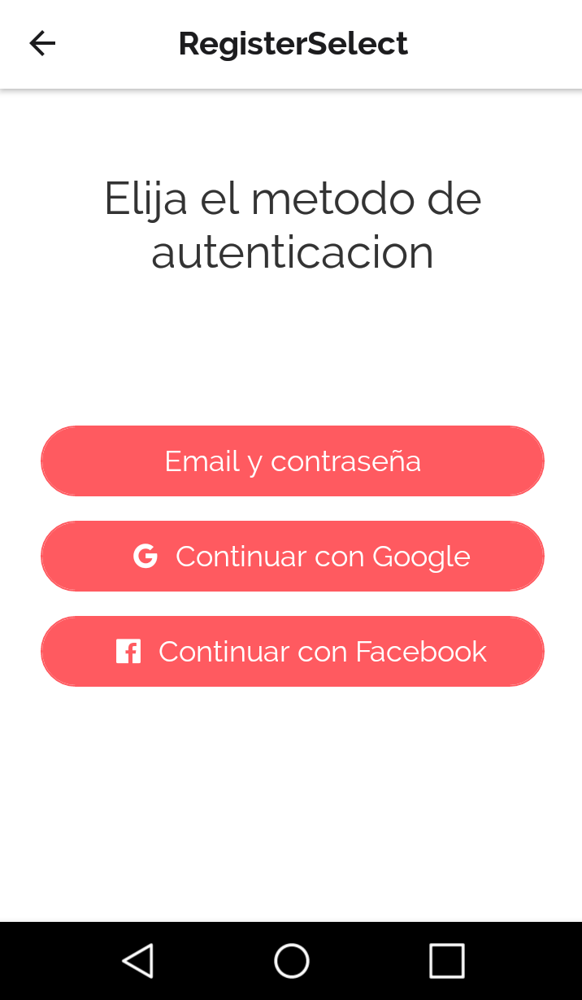
Para registrarse, BookBnb tiene tres opciones.
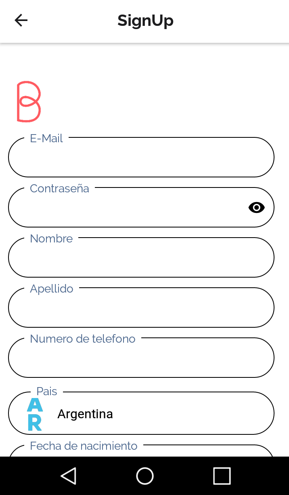
La primera opción es para crear una cuenta nueva de Bookbnb que solo le servira para esta aplicación y en la cual deberá completar un formulario con sus datos personales.
Todos los campos son obligatorios y debe completarlos par apoder terminar con el registro
Una vez completados todos los campos, apreta el boton Aceptar y ya habrá creado su primera cuenta de BookBnb.
La apliación lo hará ingresar inmediatamente despues de haber registrado su cuenta y ya podrá empezar a utilizar sus funciones.
Continua en Introduccion a BookBnb
Las otras dos permiten utilizar una cuenta existente ya sea de Google o de Facebook. Solo se le pedirá un permiso para poder acceder a su cuenta de Google o Facebook y completar unos pocos campos con su información personal.
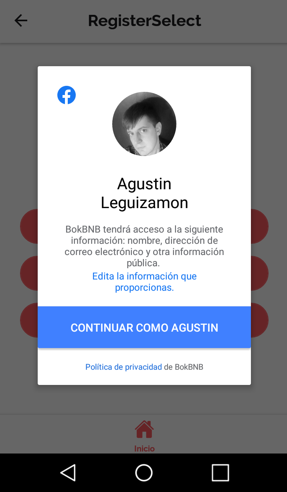
En el caso de haber realizado el paso Registrarse, puede saltear este paso.
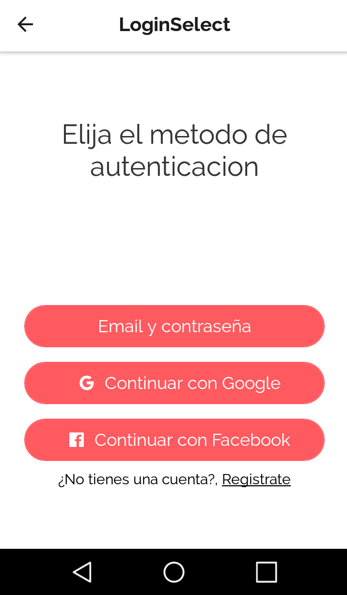
Para ingresar, BookBnb tiene las mismas tres opciones que el paso Registrarse.
Una vez seleccionada una de estas opciones y completado los pasos, ingresará a la aplicación y podrá empezar a utilizar todas sus funciones. Ver sección Introducción a BookBnb
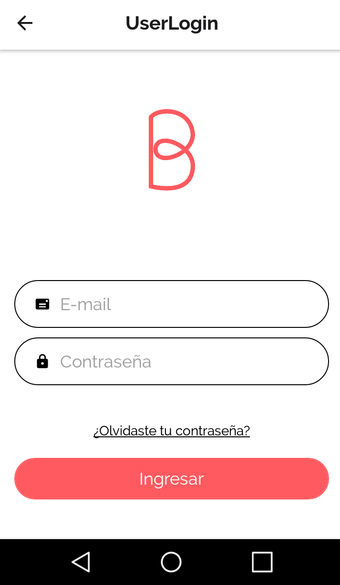
Simplemente debe proporcionar el E-mail y la contraseña de una cuenta que se haya registrado con la opción Email y contraseña del paso Registrarse.
Si se ha registrado utilizando Google o Facebook debe utilizar las otras dos opciones segun corresponda. Ver paso Continuar con Google o Continuar con Facebook
Deberá ingresar e-mail y contraseña de su cuenta de google
Deberá ingresar e-mail y contraseña de su cuenta de facebook.
En el caso de tener la aplicación de Facebook en su celular y tener una cuenta ya ingresada en ella, la apliación tomará esta por defecto y solo le solicitará el aceptar dar accesso.
En esta sección se da una breve explicación sobre las funcionalidades mas relevantes que otorga BookBnb a sus usuarios
Pantalla de inicio, la primera en verse una vez se haya ingresado a la aplicación (habiendo logeado o completado el registro). La sesión se mantiene aún si ha cerrado la aplicación, esto implica que al volver a abrir BookBnb no se le volvera a solicitar un ingreso (login o registro) y se encontrará con esta pantalla de nuevo.
Hay dos componentes principales, los botones de acceso directo y la barra de navegación inferior.
Esta barra es el principal componente utilizado para la navegación y estará presente en todas las pantallas de la aplicación, permitiendo al usuario navegar de una pantalla a otra y al volver seguir donde había dejado.
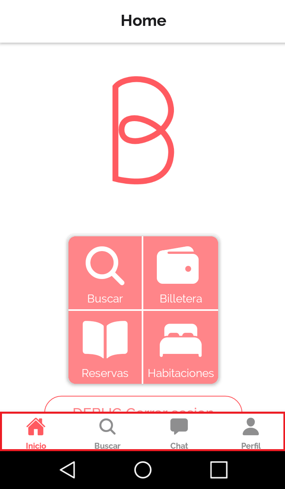
La barra inferior tiene 4 botones, el presionar cada uno lo lleva directamente a una nueva pantalla donde se le presentarán las distintas opciones para usar la aplicación.
En orden de aparición de izquierda a derecha
La pantalla principal antes mencionada, al inicio de cada sesión siempre será la priemra pantalla en ser presentada al usuario.
En el centro tiene 4 botones en una ventana con accesos directos a las funciones mas utilizadas
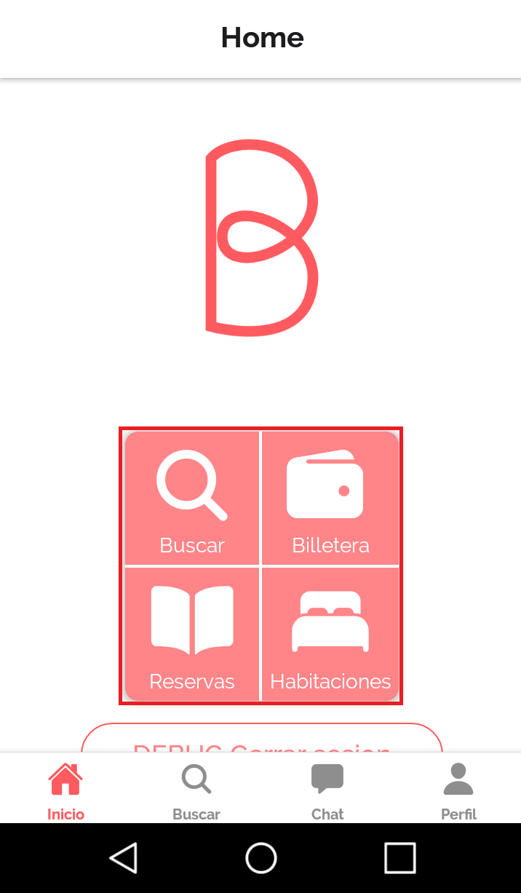
Ademas tiene una sección con habitaciones recomendadas al usuario
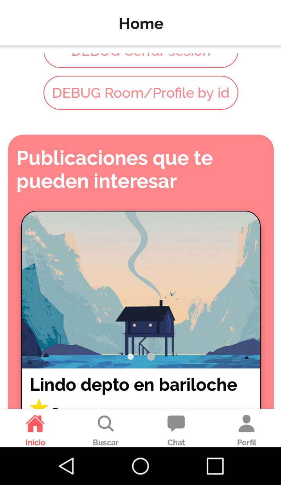
Pantalla para la busqueda de habitaciones para hospedarse, principal función de la aplicación
La aplicación lo guiará por un par de pantallas que tendrá que ir completando con sus preferencias de busqueda para así obtener todas las habitaciones que cumplen con dichos parámetros.
A continuación se da un pequeño ejemplo de su uso:
Presionando el boton de Buscar en la barra inferior o en el menu de la pantalla de inicio, irá a la pantalla de busqueda.
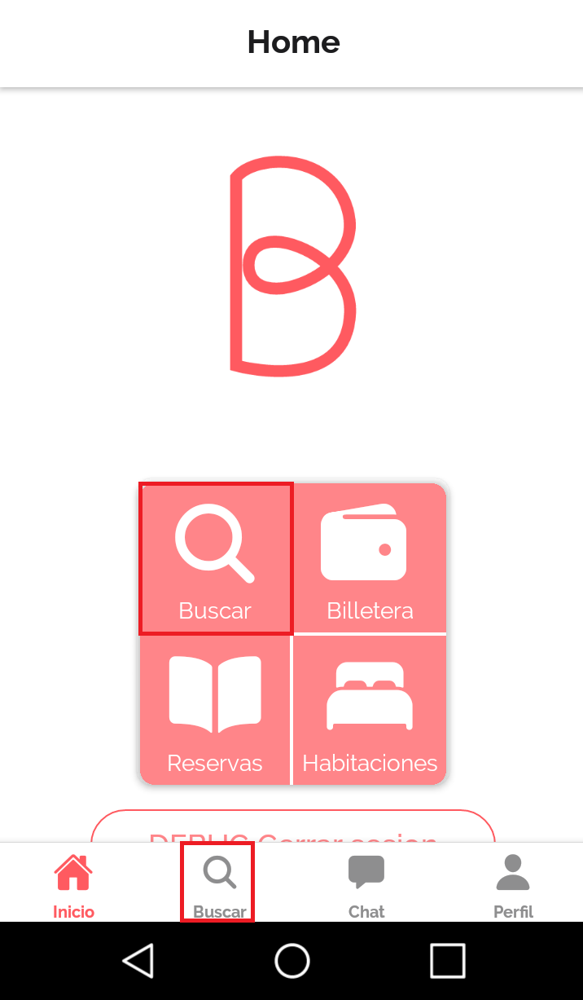
La primera pantalla solicita que se indique la localidad en la que se quiere buscar. Para esto BookBnb tiene un sistema de autocompletar en el que irá desplegando una lsita de posibles coincidencias de localidades con lo que el usuario esta ingresando.
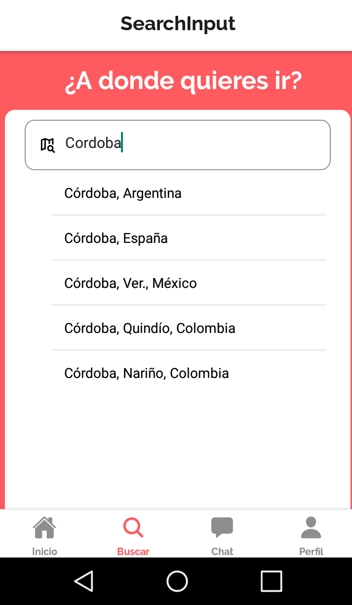
Seleccionada la localidad, pasará a la siguiente pantalla donde se le solicita indicar el tiempo de estadía. Deberá indicar dia de inicio y de fin.
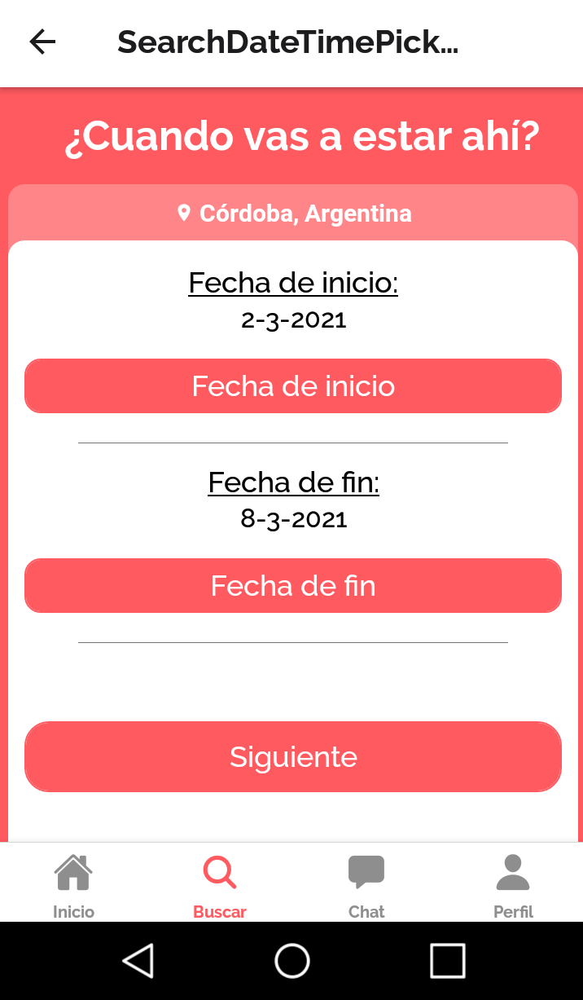
La siguiente pantalla nos solicitará ingresar la cantidad de Adultos y Niños a hospedarse
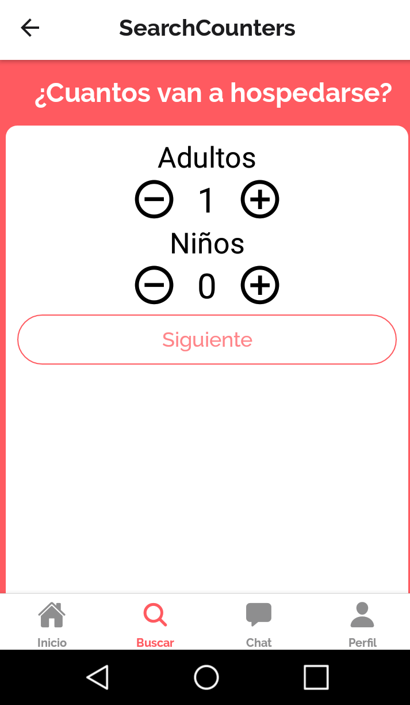
Por ultimo, la pantalla de filtros opcionales nos da la opcion de filtrar por rangode precios o categoría. En el caso de no querer aplicar ningún filtro apretar el boton Siguiente
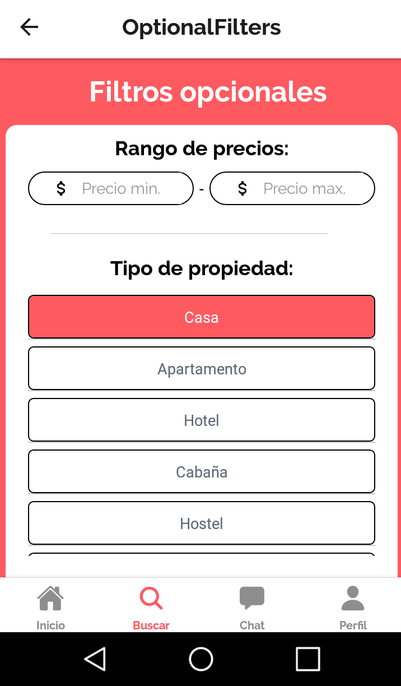
Al finalizar con este ultimo paso la aplicación mostrara un listado de todas las habitaciones que cumplan con los parámetros indicados.
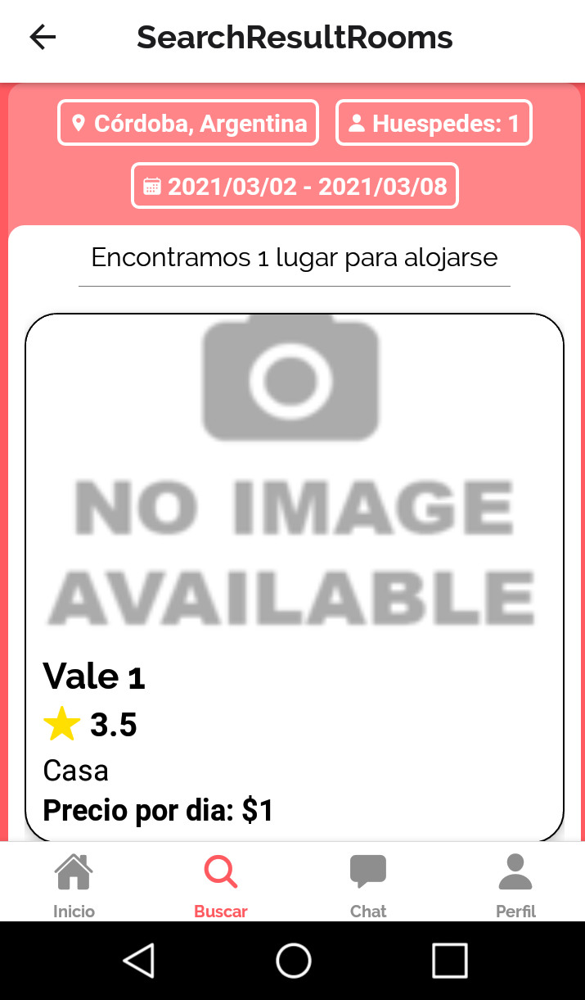
Para ver la publicación en detalle solo debe presionar la publicación.
Para ver mas en detalle como funcionan las publicaciones, ver la sección Habitaciones y Reservas.
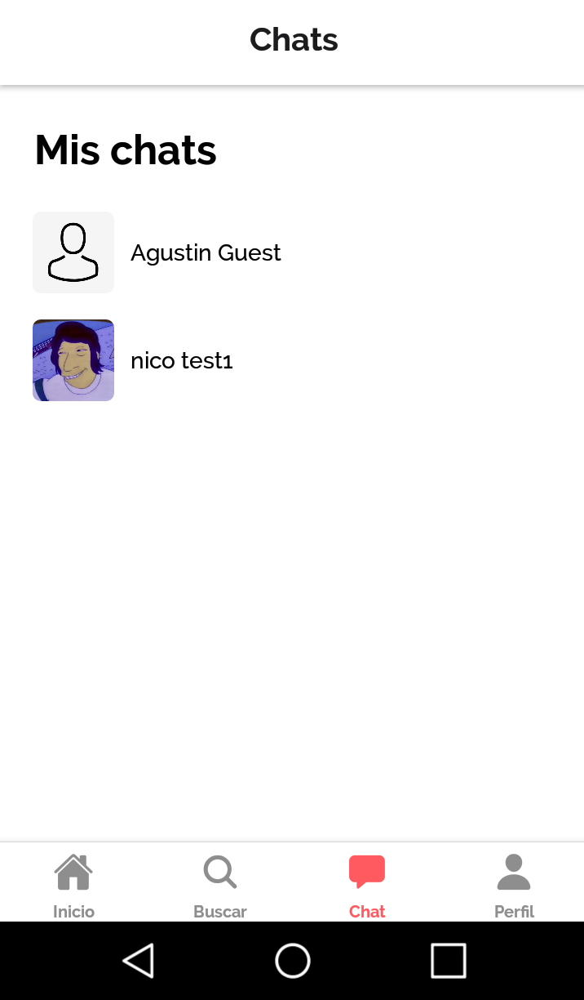
Pantalla con una lista de las conversaciones privadas en tiempo real que puede tener con distintos usuarios.
Solamente se presentaran aquellas conversaciones en curso con otros usuarios, si quiere comenzar una nueva conversación deberá primero ir al perfil de otro usuario (presionando el icono del usuario) y una vez dentro del perfil podra inicar una conversación presionando el boton Mensaje.
Los usuarios estan presentes en la sección Comentarios de una habitación y tambien como dueño de las publicaciones. Apretando cualquiera de los iconos de usuario le enviará directamente a su perfil.
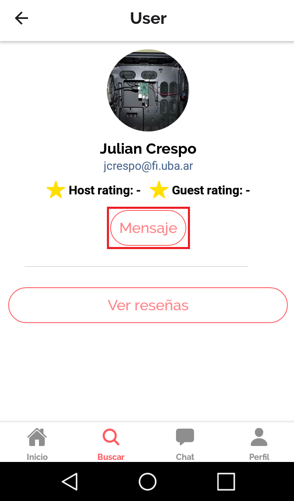
En el momento que envia el primer mensaje, se añadira la nueva conversación a la lista de la pantalla Chat
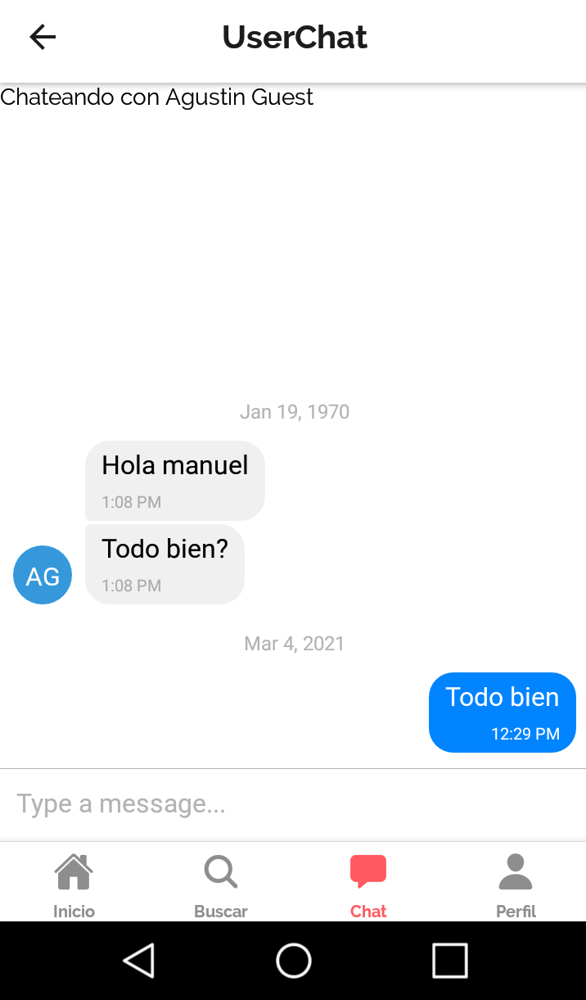
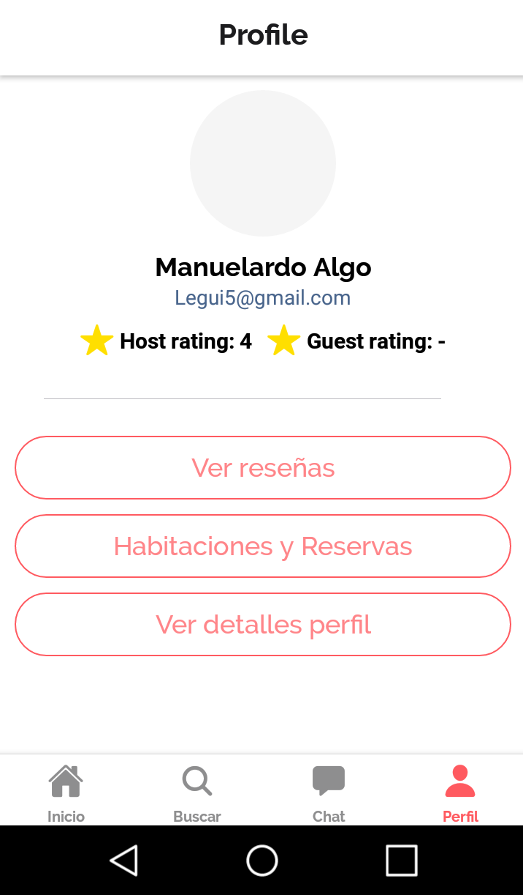
Pantalla con sus datos personales, en esta pantalla puede ver las reseñas que ha recibido tanto como iniquilino y como anfitrión; manejar las habitaciones y reservas y editar sus datos de perfil.
Para el manejo de las habitaciones y reservas ver sección Habitaciones y Reservas
En esta pantalla también tiene la opción de eliminar permanentemente su cuenta
En esta sección se dan indicaciones sobre como crear, mantener las publicaciones y manejar las reservas siendo el dueño y el como reservar una habitación como inquilino.
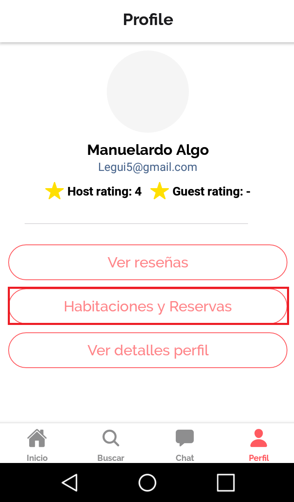
En el Perfil hay un boton Habitaciones y Reservas que envía al usuario a una pantalla con opciones para el manejo de las Habitaciones y la Billetera.
Hay cuatro opciones
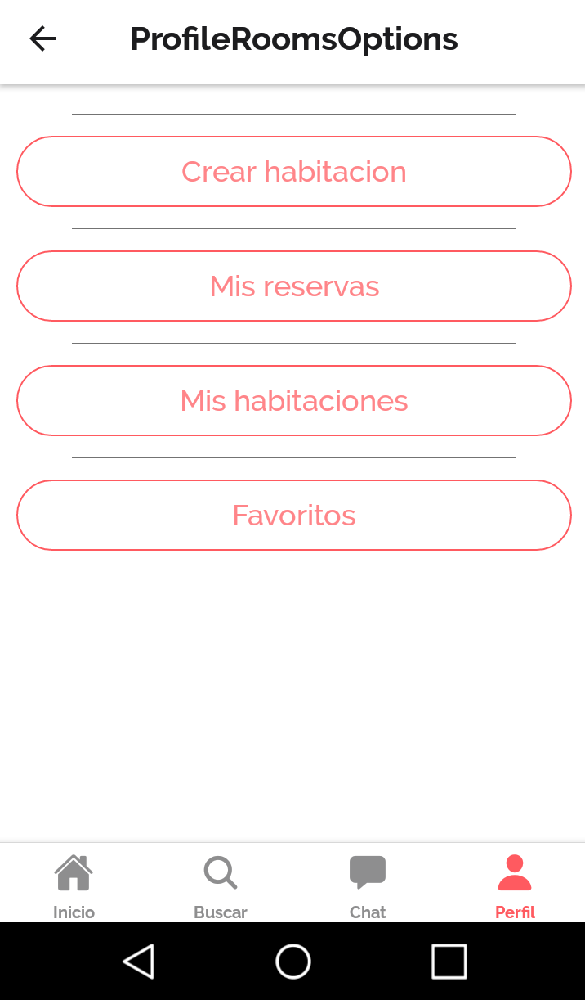
Permite crear una nueva publicación de un alojamiento
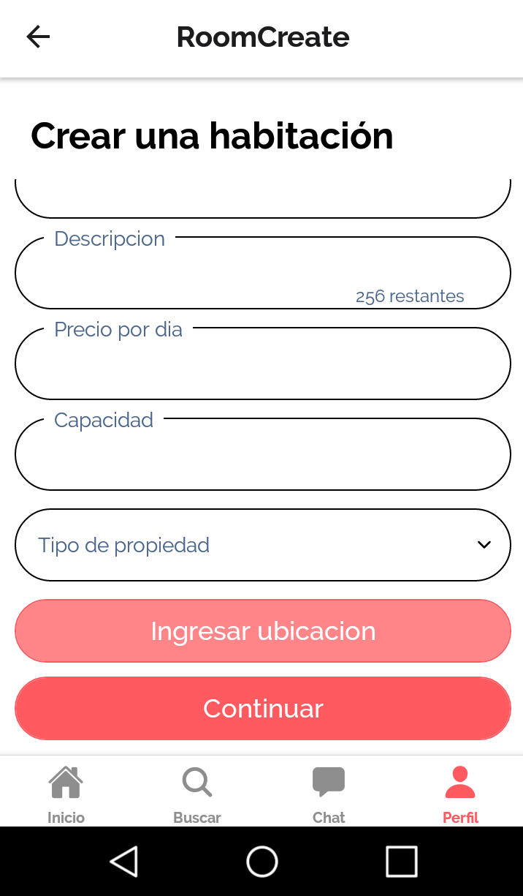
Debe completar el formulario y por ultimo tiene la opción de agregar una foto de la habitación. Una vez finalizada la creación de la publicación los usuarios podrán encontrarla mediante el buscador y empezar a realizar reservas, comentarios y podran ver su perfil para iniciar conversaciones.
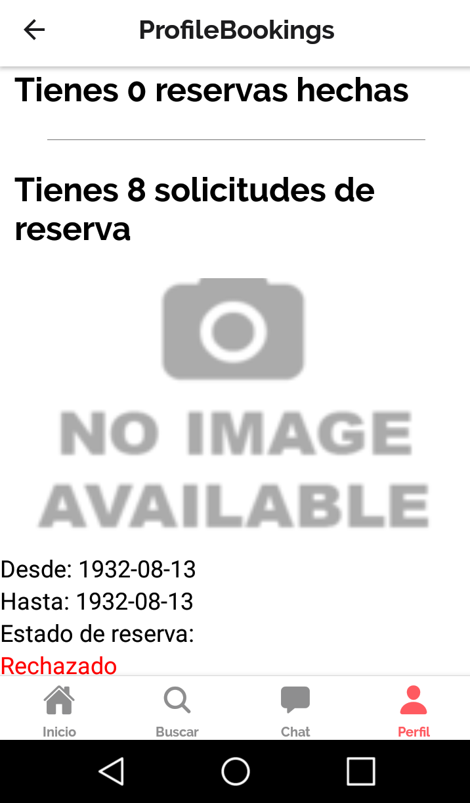
Dos listados, uno con las reservas que han realizado de mis habitaciones y otra con las reservas que el usuario a solicitado. Podrá consultar el estado ya sea Pendiente, Aceptado o Rechazado. También tiene la opción de ver los detalles de las reservas presionando el boton Ver reserva.
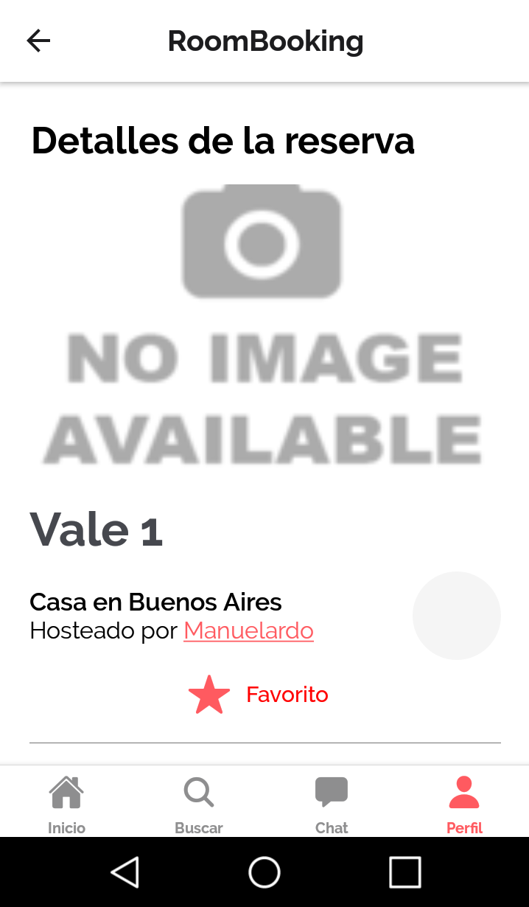
En el caso de ser el dueño del alojamiento, tiene la opción de Aceptar o Rechazar aquellas reservas que esten en estado Pendiente.
En el caso de ser un inquilino puede ver el estado y si esta fue Aceptada y ha pasado el tiempo de estadía, tiene la opción de hacer una reseña tanto de la habitación como del dueño. El anfitrión puede hacer con el inquilino. Las reseñas son tanto cuantitativas (estrellas) como cualitativas (reseñas escritas) y serán visibles para los usuarios que consulten los perfiles y en el caso de ser una habitación se podrá ver la reseña y puntuación (rating) en la publicación de esta.
Un listado con todas las publicaciones creadas por el usuario
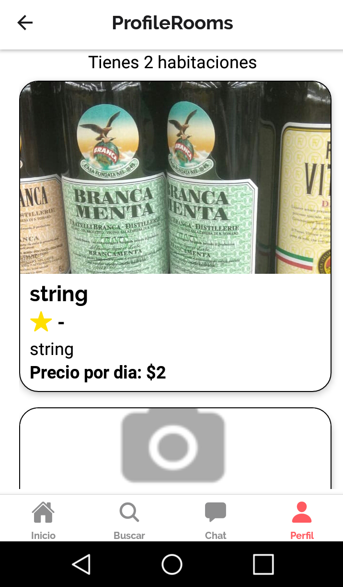
Presionar una publicación permite ver los detalles, de la misma manera que haría un usuario que esta buscando una habitación. De esta manera puede verificar los datos de sus publicaciones.
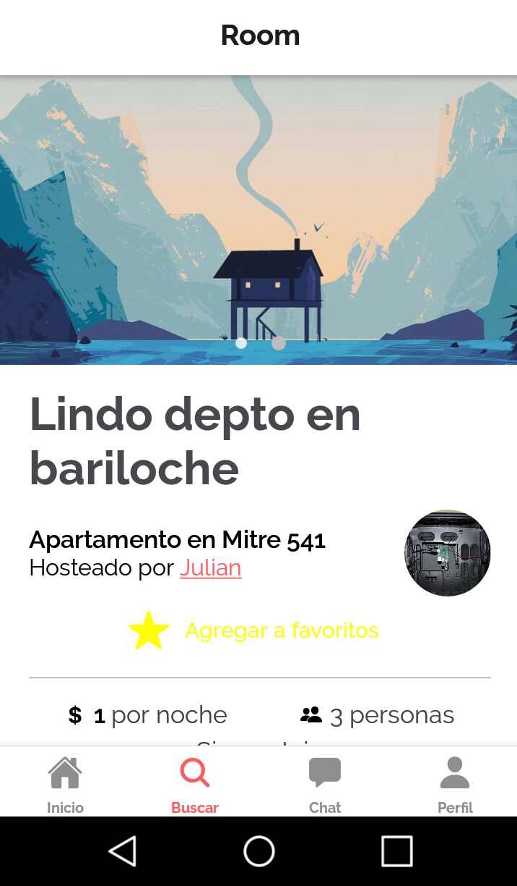
En esta pantalla el dueño puede ver la publicacion como si fuera un inquilino pero con los adicionales de poder contestar a los comentarios que se hacen en la publicación y el de editar la habitación (agregar fotos, cambiar precio, eliminarla)
Pantalla con una lista de todas las publicaciones que el usuario ha marcado como favorito
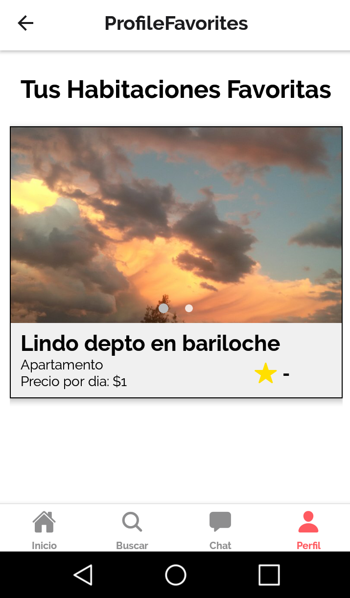
Funciona como un acceso directo a la publicación sin tener que realizar otra busqueda.
Para agregar una publicación a favoritos se debe primero ingresar a una publicación y una vez dentro hay un boton Agregar a favoritos debajo de la imagen.
La unica forma de pago utilizada por la aplicación es la criptomoneda Ethereum.
Al crear una cuenta nueva, la aplicación automaticamente crea una Wallet al usuario para el uso de criptomonedas.
Esta pantalla indica el balance del usuario junto con el address para la transferencia de Ethereum.
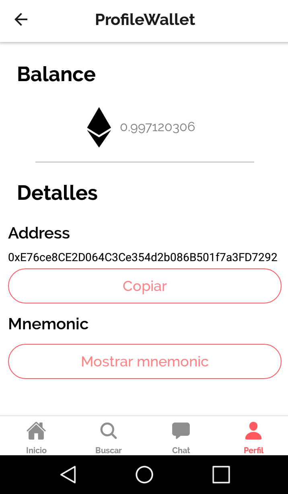
Lista de operaciones que poseen un coste:
La aplicación le pedira una confirmación cada vez que vaya a realizar alguna de estas operaciones, el monto será descontado directamente de su billetera.